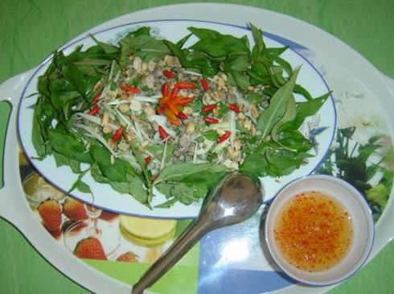

Cùng bắt tay làm thử thôi nào!
Nguyên liệu:
Nguyên liệu: (cho 4-6 người ăn tạm theo dạng khai vị)
- 4 lbs Manila clams (còn sống)
- 1/2 củ hành tây đỏ (thái mỏng)
- 1/2 cup ngò rí (thái nhỏ)
- 1 cup rau mùi (húng cây và húng quế thái nhỏ)
- 8-10 tép tỏi (đâm nhuyễn)
- 8-10 trái ớt hiểm (thái nhỏ)
- 3 lát riềng nướng (thái chỉ)
- 2 thanh sả (chỉ lột lấy phần lỏi và thái mỏng xiêng góc)
- 3 thìa canh nước mắm ngon
- 10-12 lá romaine heart lettuce
- 2 quả chanh xanh
- Bánh đa nướng (optional)
Cách Làm:
Hến manila rửa sạch... xong cho vào nồi hấp chừng 5 phút xong dùng vòi nước lạnh mà rửa nguội lại ngay (vì nếu để nóng tiếp... hến chín quá độ ... sẽ bớt ngon). Dùng dao nhỏ mà bóc thịt hến cho vào một tô lớn để trộn gỏi (giai đoạn nầy nên kiểm soát ai đấy phụ trách việc bóc thịt hến... nhất là chớ bao giờ để một chén nước mắm chua ngọt kề bên)
Rửa sạch romaine heart lettuce, thái phần đầu lá chừng 3", thái phần sau chừng 1/2" ; Viềng phần đấu lá romaine heart lettuce lên hai đĩa bàn, đệm phần thân (thái nhỏ) vào giữa... để sẵn.
Trộn tỏi bằm, ớt hiểm, riềng, chung với nước mắm xong... rưới vào tô thịt hến, cho hành đỏ, sả thái mỏng và nước chanh vắt từ hai quả chanh... trộn đều xong cho ngò rí và rau mùi vào trộn sơ lại và sớt lên hai đĩa bàn romaine heart lettuce... là sẵn sàng cho dân chai lọ tác chiến... cùng bánh đa nướng và bia lạnh!
Khi ăn, chủ nhà nên biểu diễn phương cách phục vụ... dùng thìa vớt một đầu lá lettuce cho vào đĩa khách... xong múc một ít gỏi hến cho lên phần đầu lá... (nếu mà ai đấy dùng hến lon để độn cùng phần hến tươi... thì người ấy biết miếng hến nào ngon và miếng hến nào không ngon bằng... mà múc cho đối tượng nào mà người ấy thích nhiều hay thích ít hén)